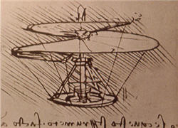

El genio de la creatividad: Elizabeth Gilbert en TED 2009
Crear algo es un proceso misterioso, pero sobre todo difícil y lleno de momentos de duda sobre la propia capacidad.
Pero podemos empezar por preguntarnos si realmente es nuestra esa capacidad.
No sabemos cómo pensamos, cómo funcionan los procesos que nos hacen cobrar consciencia, y ciertamente tampoco sabemos cómo creamos.
Pero seguimos sintiéndonos responsables de esa capacidad, como si fuéramos totalmente dueños de ella.
Y si bien es cierto que toda creación implica esfuerzo, constancia y concentración, tampoco es algo que podamos conjurar a voluntad. No podemos forzar esa chispa súbita que llamamos inspiración, la idea que se aparece repentina y urgente para darle nacimiento, forma o el toque final a algo.
No creo en entidades invisibles que controlen o asignen inspiración a los seres humanos, el mundo ya es bastante complejo tal como es, y francamente no creo que seamos tan importantes para tener un servicio de administración creativa cósmica asignado al servicio de la humanidad.
Pero sí creo que somos un misterio para nosotros mismos, que lo que llamamos «yo» es demasiado pequeño y superficial para explicar lo que somos. Que muchas veces nos equivocamos al cargar con culpas y glorias que no le pertenecen a nuestra parte consciente, e incluso, que a veces no nos pertenecen a nosotros en lo absoluto. Que nos queda mucho por aprender como para tomarnos tan en serio y creer tanto que estamos bajo nuestro completo control.
Y en el fondo ya sabemos que para crear, no hay otra forma mas que intentarlo una y otra vez. Y esperar a que esa idea indefinible, esa sensación desconocida a la que atisbamos de reojo se manifieste de lleno. Y si no lo hace, intentarlo de nuevo, disfrutando de ese esfuerzo voluntario y dirigido que quizás no llegue a nada (en términos de éxito o de aceptación masiva), pero que tiene muchísimo significado en sí mismo.
La siguiente charla es otra de mis favoritas. En ella, Elizabeth Gilbert (una escritora de éxito internacional) hace una presentación magnífica de lo que puede ser la lucha creativa, y ofrece una perspectiva de cómo podemos entrar a esa batalla protegidos de nuestro ego. Una perspectiva, o un truco quizás, que yo comparto: La creación viene de fuera.
La ponente
Elizabeth M. Gilbert, es una novelista, ensayista, biógrafa y escritora estadounidense. Estudió Ciencias Políticas en la Universidad de Nueva York, y al terminar se dedicó a experimentar la vida como cocinera, camarera, mandadera en una revista y otros trabajos, con el propósito de poder escribir después sobre ellos.
Come, reza, ama
Elizabet Gilbert ha publicado varios libros, pero aquél con el que obtuvo fama mundial es «Come, reza, ama», publicado en 2006. En esta memoria narra la búsqueda espiritual y personal que emprendió durante un año, viajando a Italia, la India y Bali. El libro ya permaneció por más de 100 semanas en la lista de Bestsellers de no-ficción del New York Times.
Los derechos para hacer una película basada en la obra han sido comprados por Paramount Pictures, y se planea que sea protagonizada por Julia Roberts.
El genio de la creatividad
Persiste, de todas formas.
[Charla completa en YouTube por cortesía de Keny.]
*Descarga la conferencia (720×400): Parte 1 Parte 2
Video: Xvid, audio: mp3, tipo: AVI, tamaño: 121MB.
>> Compatible con reproductores certificados DivX.
Descarga las partes a la misma carpeta y descomprime con WinRar.
Traducción y subtítulos: Ajmme Kajros
En TED: Elizabeth Gilbert on nurturing creativity
*Video subtitulado y distribuido bajo los términos de uso de TED Conferences LLC.
Metadatos y acciones
 Temas: arte, cultura, inspiracion, mitos, tedtalk, video ⋅
Para guardar: Enlace permanente a esta anotación.
Temas: arte, cultura, inspiracion, mitos, tedtalk, video ⋅
Para guardar: Enlace permanente a esta anotación.
 Print This Post
Print This Post
Comentarios
Los comentarios están cerrados.
Categorías
Últimas 4 anotaciones
Últimas anotaciones en cada categoría

Divulgación
El dinero no fomenta la creatividad: Daniel Pink en TEDGlobal 2009

Inspiración
Los 30 no son los nuevos 20

Noticias
Ver tu mente en tiempo real: Christopher deCharms en TED 2008
![Música en la era digital [Animación]](../../../wp-content/themes/tma/images/featured/animation_04_2009_featured.jpg)
Ocio
Música en la era digital [Animación]
julio 5, 2009, 7:40 pm
Información Bitacoras.com…
Valora en Bitacoras.com: Crear algo es un proceso misterioso, pero sobre todo difícil y lleno de momentos de duda sobre la propia capacidad. Pero podemos empezar por preguntarnos si realmente es nuestra esa capacidad. No sabemos cómo pensamos, cómo …
julio 6, 2009, 2:35 pm
Acabo de descubrir su maravilloso espacio. Me ha encantado.
Estoy totalmente de acuerdo respecto a la creatividad, nuestra parte humana debe de estar conectada con el todo, no estamos solos ni abandonados.
Me gustaría, si le parece bien, añadir su web a mi blog.
Gracias y Saludos desde el mediterráneo español.
Edda.
julio 7, 2009, 11:12 am
Felicidades Ajmme y gracias por compartir la posibilidad de pensar en cosas bellas e interesantes para alimentar el alma, cansada ya de tanta basura en los medios. Espero continuar disfrutando de tus hallazgos.Magdalena
febrero 18, 2010, 12:07 pm
Gracias por las traducciones. Ayudan muchísimo a conocer opiniones y puntos de vista muy interesantes. Conocía las charlas TED, pero me habian llegado algunas muy pre-seleccionadas. Por eso, entiendo ahora, tenía tan ALTO concepto de las mismas. Pero ahora, al poder ver más, se relativizó un poco mi opinión. Sobre todo después de escuchar a esta señora pagada de sí misma, haciendo el papel de artista torturada, poniéndose en un lugar de no sé qué privilegio y diciendo poco menos que disparates hacerca de la creatividad y ufanándose de su ‘investigación’ al respecto (mi dios!) bueno, entendí que no todas las charlas TED tenían un buen nivel. De haber participado de esta me habría levantado y ahorrado un montón de sinsavores. En cuanto a su labor de traducción, le estoy infinitamente agradecido. Aporta mucho a este mundo pleno de incertidumbres. Gracias una vez más. José
noviembre 28, 2010, 1:21 pm
verga amo a esta caraja *-* XD amo como hablaaa, olee para ti Elizabeth *-*!
agosto 25, 2011, 3:24 pm
Después de compartir esta conferencia y haber leído, uno detrás de otro “comer-rezar-amar” y “comprometida”, no me cabe duda de que el genio está dentro o alrededor de esta mujer. Gracias Elizabeth por estos dos libros y por la posibilidad de disfrutar también de la película basada en el primero de ellos,(aunque se pierde bastante en la adaptación, conserva intacto su encanto).Seguramente Dios o Alá andaban rondando.